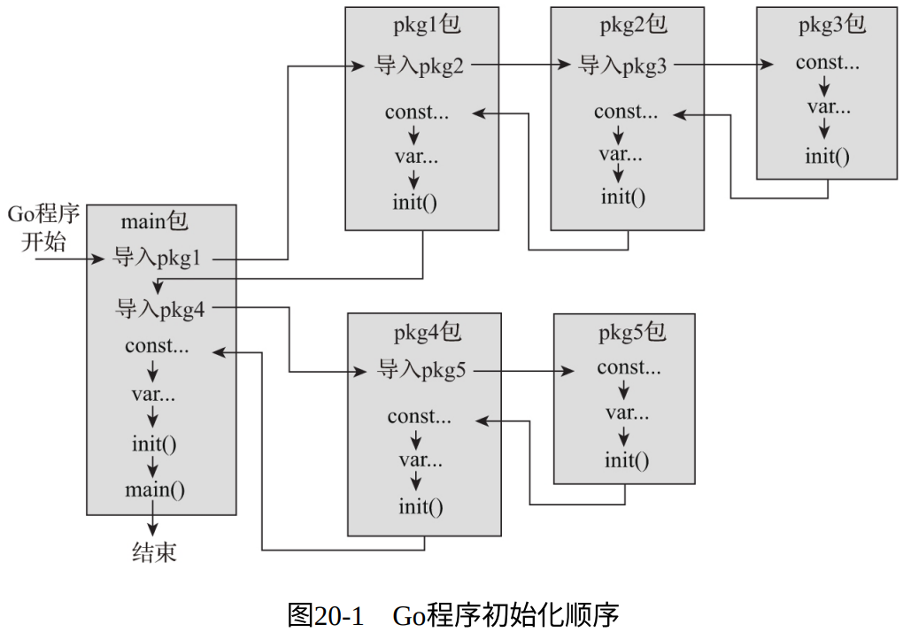

- 从程序逻辑结构角度来看，包是Go程序逻辑封装的基本单元
- 每个包都可以理解为一个 “自治”的、封装良好的、对外暴露有限接口的 基本单元
- 在Go包中分布着常量、包级变量、函数、类型、类型方法、接口等，我们想要保证包内部这些元素在被使用之前处于合理有效的初始状态。而我们一般通过包的init函数来完成这一工作
1. 认识init函数
- init函数是一个无参、无返回值的函数，每个init函数在整个Go程序生命周期内仅会被执行一次；
- 如果一个包定义了init函数，Go运行时会负责在该包初始化时调用它的init函数；
- 但是我们不能在Go程序中显式调用init函数，否则会产生编译错误；
- 每个组成Go包的Go源文件中可以定义多个init函数，而初始化Go包时，Go运行时会按照一定的次序逐一调用该包的init函数
- 一般来说，先被传递给Go编译器的源文件的init函数会先被执行，同一个源文件中的多个init函数按声明顺序依次执行。但是：请不要依赖init函数的执行次序
2. 程序初始化顺序

init函数的执行顺序排在其所在包的包级变量之后
3. 使用init函数检查包级变量的初始状态
init函数就好比Go包真正投入使用之前的唯一“质检员”，负责对包内部以及暴露到外部的包级数据的初始状态进行检查。